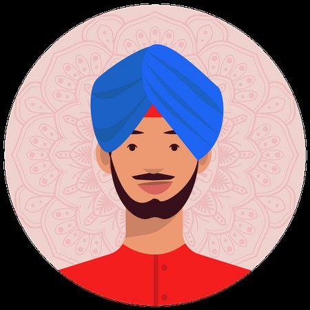

<b>
   <h
    <h1>Nihal Sekhon</h1>
     <h3 id="head">Nihal Sekhon</h3>
     <hr>
     <div class="sidebar">
      <div id="image"></div>
      <div id="sl1"><hr /></div>
     <div id="Contact">Contact</div> 
      <div id="Phone"> 778-882-1750</div>
      <div id="Phone"> 1111 Goofy Street BC</div>
      <div id="email">nihals063@deltalearns.ca</div>
      <div id="sl1"><hr /></div>
      <div id="Contact">Languages</div>
      <div id="languages"></div> 
      <div id="languages">English - ★★★★★</div>
      <div id="languages">Punjabi - ★★★★</div>
      <div id="languages">Hindi - ★★★</div>
       <div id="languages">French - ★★</div>
      </ul>
      <div id="sl3"><hr /></div>
    </div>
    <div class="body-text">
      <!-- body content -->
    </div>
    
    
    <h2>Profile</h2>
     <p>Nihal Sekhon is a productive and hardworking individual
         as he believes hard work bears the greatest results. His
          productive workstyle increases creativity and motivation
        in himself and fellow peers in any workspace. He is also workign hard at constantly improving his community, 
        having volunteered 100 hours at Seaquam events
    </p>
    <h2>Skills/Abilties</h2>
     <ul>
       <li>Attentive to Details<br></li>
       <li>Clear Handwriting<br></li>
       <li>Web and Tech Savvy<br></li>
       <li>Constantly organized<br></li>
       <li>Multilingual</li>

     </ul>
    <h2>Work Experience</h2>
     <h3 id="list">Filing assistant</h3>
     <ul id="list">
        <li>Learn to sort and store student files</li>
        <li>Sort files for 500+ students in the school</li>
        <li>Help organize assemblies</li>
        <li>Co-taught pre-school kids</li>
        <li>Guided visitors to where they needed to go</li>
        <li>Scan and upload documents to the shcools system</li>
        <li>Assisted staff in locating documents</li>
        <li>Aided in fund raising</li>
     </ul>
    <h2>Languages</h2>
     <ul>
        <li>English-★★★★★</li>
        <li>Punjabi-★★★★</li>
        <li>Hindi-★★★</li>
        <li>French-★★</li>
     </ul>
    <h2>Achievements</h2>
     <p>
      <ul id="list">
         <li>Recieved a principles list award for each of my two years at Seaquam</li>
         <li>Has recieved an honor roll for 7 years straight</li>
         <li>Co-taught preschool students</li>
         <li>Dristributed food for free to 100+ students at Seaquam with friends</li>
         <li>Became a Master Corporal in my cadet core</li>
         <li>Led my elementary schools first robotics competition</li>
         <li>Learned to code HTML, CSS and Javascript</li>
      </ul>
     </p>
    <h2>Education</h2>
     <p></p>

</b>